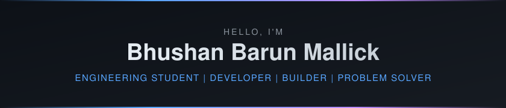

CyberSleuth-Bhushan /
CyberSleuth-Bhushan
✨ Profile README Live Preview
<!-- ======================================================================== --> <!-- GitHub Profile README — Bhushan Barun Mallick --> <!-- https://github.com/CyberSleuth-Bhushan --> <!-- ======================================================================== --> <div align="center"> <!-- HERO BANNER --> <p></p> <br/> <!-- PROFILE PHOTO --> <br/><br/> <!-- TYPING ANIMATION --> <a href="https://git.io/typing-svg"> <img src="https://readme-typing-svg.demolab.com?font=Fira+Code&weight=500&size=22&duration=3000&pause=1000&color=58A6FF¢er=true&vCenter=true&multiline=false&repeat=true&width=600&height=35&lines=Engineering+Student+%40+TGPCET;Full-Stack+Developer;AI+%2F+ML+Enthusiast;IoT+%26+Embedded+Systems+Explorer;Cybersecurity+Learner;Open+Source+Contributor" alt="Typing SVG"/> </a> <br/><br/> <!-- QUICK PROFILE LINKS --> [](https://github.com/CyberSleuth-Bhushan) [](https://www.linkedin.com/in/bhushan-mallick/) [](https://bhushanmallick.com) [](mailto:bhushanmallick2006@gmail.com) </div> <!-- DIVIDER --> <!-- ==================== ABOUT ME ==================== --> ## <img src="https://raw.githubusercontent.com/Tarikul-Islam-Anik/Animated-Fluent-Emojis/master/Emojis/People%20with%20professions/Man%20Technologist%20Light%20Skin%20Tone.png" width="28"/> About Me <table> <tr> <td width="50%" valign="top"> I'm **Bhushan Barun Mallick**, an Information Technology student at **Tulsiramji Gaikwad-Patil College of Engineering & Technology (TGPCET)**, Nagpur, India. I build web applications, explore AI/ML and IoT systems, and enjoy solving real-world problems through code. My interests span across full-stack development, cybersecurity, and emerging technologies. I believe in learning by building — every project is a step toward becoming a better engineer. </td> <td width="50%" valign="top"> ```yaml name: Bhushan Barun Mallick located_in: Nagpur, India college: TGPCET (IT) fields_of_interest: - Full-Stack Web Development - AI / Machine Learning - IoT & Embedded Systems - Cybersecurity - Open Source currently_learning: - Advanced JavaScript & React - Cloud Services & DevOps - Machine Learning Fundamentals hobbies: - Competitive Programming - Building Side Projects - Tech Exploration ``` </td> </tr> </table> <!-- DIVIDER --> <!-- ==================== CURRENTLY ==================== --> ## <img src="https://raw.githubusercontent.com/Tarikul-Islam-Anik/Animated-Fluent-Emojis/master/Emojis/Travel%20and%20places/Rocket.png" width="28"/> What I'm Up To - 🔭 Working on **[AquaSentinel](https://github.com/CyberSleuth-Bhushan/AquaSentinel)** — a smart water quality monitoring system using IoT - 🌱 Learning **React**, **Node.js**, and **Cloud Architecture** - 🧠 Exploring **Machine Learning** and **AI-driven applications** - 🔐 Diving deeper into **Cybersecurity** fundamentals - 🛠️ Building tools and utilities like **[Honest Weather](https://github.com/CyberSleuth-Bhushan/Honest-Weather)** and **[Password Generator](https://github.com/CyberSleuth-Bhushan/Ultimate-Password-Generator)** - 💬 Ask me about **Web Development**, **JavaScript**, **IoT**, or **Python** - ⚡ Fun fact: I turn coffee into code and bugs into features <!-- DIVIDER --> <!-- ==================== TECH STACK ==================== --> ## <img src="https://raw.githubusercontent.com/Tarikul-Islam-Anik/Animated-Fluent-Emojis/master/Emojis/Objects/Hammer%20and%20Wrench.png" width="28"/> Tech Stack <details open> <summary><b>Languages</b></summary> <br/>      </details> <details open> <summary><b>Frontend</b></summary> <br/>    </details> <details open> <summary><b>Backend & Database</b></summary> <br/>     </details> <details open> <summary><b>IoT & Hardware</b></summary> <br/>   </details> <details open> <summary><b>Tools & Platforms</b></summary> <br/>      </details> <!-- DIVIDER --> <!-- ==================== FEATURED PROJECTS ==================== --> ## <img src="https://raw.githubusercontent.com/Tarikul-Islam-Anik/Animated-Fluent-Emojis/master/Emojis/Objects/Card%20File%20Box.png" width="28"/> Featured Projects <div align="center"> <a href="https://github.com/CyberSleuth-Bhushan/AquaSentinel"> <img src="https://github-readme-stats.vercel.app/api/pin/?username=CyberSleuth-Bhushan&repo=AquaSentinel&theme=tokyonight&hide_border=true&bg_color=0d1117&title_color=58a6ff&icon_color=bc8cff&text_color=c9d1d9" alt="AquaSentinel"/> </a> <a href="https://github.com/CyberSleuth-Bhushan/Honest-Weather"> <img src="https://github-readme-stats.vercel.app/api/pin/?username=CyberSleuth-Bhushan&repo=Honest-Weather&theme=tokyonight&hide_border=true&bg_color=0d1117&title_color=58a6ff&icon_color=bc8cff&text_color=c9d1d9" alt="Honest Weather"/> </a> <br/> <a href="https://github.com/CyberSleuth-Bhushan/Ultimate-Password-Generator"> <img src="https://github-readme-stats.vercel.app/api/pin/?username=CyberSleuth-Bhushan&repo=Ultimate-Password-Generator&theme=tokyonight&hide_border=true&bg_color=0d1117&title_color=58a6ff&icon_color=bc8cff&text_color=c9d1d9" alt="Ultimate Password Generator"/> </a> <a href="https://github.com/CyberSleuth-Bhushan/IT-Invitations-tgp"> <img src="https://github-readme-stats.vercel.app/api/pin/?username=CyberSleuth-Bhushan&repo=IT-Invitations-tgp&theme=tokyonight&hide_border=true&bg_color=0d1117&title_color=58a6ff&icon_color=bc8cff&text_color=c9d1d9" alt="IT Invitations TGP"/> </a> </div> <br/> <div align="center"> <a href="https://github.com/CyberSleuth-Bhushan?tab=repositories"> <img src="https://img.shields.io/badge/View_All_Repositories-58a6ff?style=for-the-badge&logo=github&logoColor=fff" alt="All Repos"/> </a> </div> <!-- DIVIDER --> <!-- ==================== GITHUB STATISTICS ==================== --> ## <img src="https://raw.githubusercontent.com/Tarikul-Islam-Anik/Animated-Fluent-Emojis/master/Emojis/Objects/Bar%20Chart.png" width="28"/> GitHub Statistics <div align="center"> <img src="https://github-readme-stats.vercel.app/api?username=CyberSleuth-Bhushan&show_icons=true&theme=tokyonight&hide_border=true&bg_color=0d1117&title_color=58a6ff&icon_color=bc8cff&text_color=c9d1d9&ring_color=58a6ff&count_private=true" alt="GitHub Stats" height="180"/> <img src="https://github-readme-stats.vercel.app/api/top-langs/?username=CyberSleuth-Bhushan&layout=compact&theme=tokyonight&hide_border=true&bg_color=0d1117&title_color=58a6ff&text_color=c9d1d9&langs_count=8" alt="Top Languages" height="180"/> <br/><br/> <img src="https://streak-stats.demolab.com?user=CyberSleuth-Bhushan&theme=tokyonight&hide_border=true&background=0D1117&ring=58A6FF&fire=BC8CFF&currStreakLabel=58A6FF&sideLabels=C9D1D9&dates=8B949E&currStreakNum=C9D1D9&sideNums=C9D1D9" alt="GitHub Streak" width="520"/> </div> <!-- DIVIDER --> <!-- ==================== CONTRIBUTION GRAPH ==================== --> ## <img src="https://raw.githubusercontent.com/Tarikul-Islam-Anik/Animated-Fluent-Emojis/master/Emojis/Animals/Snake.png" width="28"/> Contribution Graph <div align="center"> <picture> <source media="(prefers-color-scheme: dark)" srcset="https://raw.githubusercontent.com/CyberSleuth-Bhushan/CyberSleuth-Bhushan/output/github-snake-dark.svg"/> <source media="(prefers-color-scheme: light)" srcset="https://raw.githubusercontent.com/CyberSleuth-Bhushan/CyberSleuth-Bhushan/output/github-snake.svg"/> <img alt="Contribution Snake Animation" src="https://raw.githubusercontent.com/CyberSleuth-Bhushan/CyberSleuth-Bhushan/output/github-snake.svg" width="100%"/> </picture> </div> > **Note:** The snake animation is generated daily via [GitHub Actions](.github/workflows/contribution-snake.yml). If it doesn't appear, see [SETUP.md](SETUP.md) for activation instructions. <!-- DIVIDER --> <!-- ==================== CODING PROFILES ==================== --> ## <img src="https://raw.githubusercontent.com/Tarikul-Islam-Anik/Animated-Fluent-Emojis/master/Emojis/Objects/Laptop.png" width="28"/> Coding Profiles <div align="center"> [](https://leetcode.com/u/YOUR_LEETCODE_USERNAME) [](https://codeforces.com/profile/YOUR_CODEFORCES_USERNAME) [](https://www.hackerrank.com/YOUR_HACKERRANK_USERNAME) </div> <!-- DIVIDER --> <!-- ==================== CONNECT ==================== --> ## <img src="https://raw.githubusercontent.com/Tarikul-Islam-Anik/Animated-Fluent-Emojis/master/Emojis/Hand%20gestures/Handshake.png" width="28"/> Let's Connect <div align="center"> [](https://github.com/CyberSleuth-Bhushan) [](https://www.linkedin.com/in/bhushan-mallick/) [](https://bhushanmallick.com) [](mailto:bhushanmallick2006@gmail.com) [-000?style=for-the-badge&logo=x&logoColor=fff)](https://x.com/BhushanMallick6) [](https://www.instagram.com/bhushan.98_xz_/) </div> <br/> <!-- ==================== FOOTER ==================== --> <div align="center"> <br/> <img src="https://komarev.com/ghpvc/?username=CyberSleuth-Bhushan&style=for-the-badge&color=58a6ff&label=PROFILE+VIEWS" alt="Profile Views"/> <br/><br/> <sub>⭐ If you find any of my projects useful, consider giving them a star!</sub> </div>